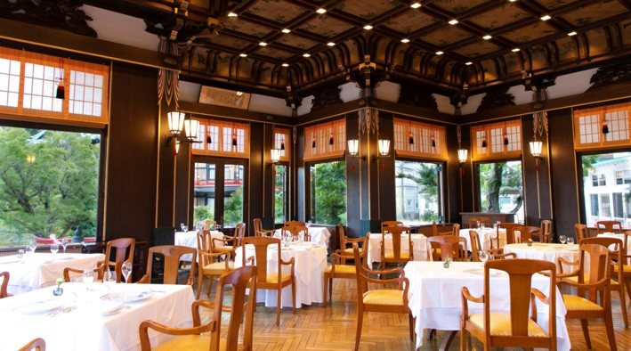
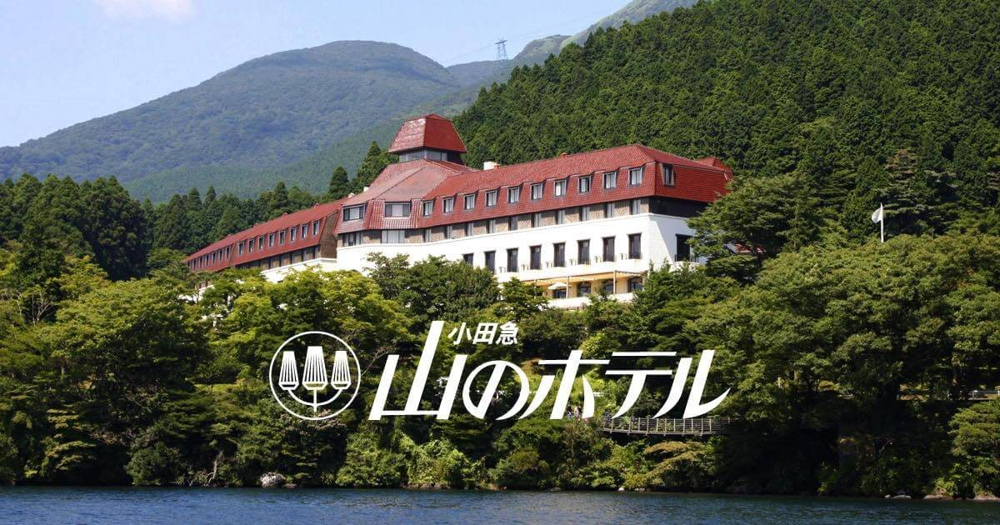
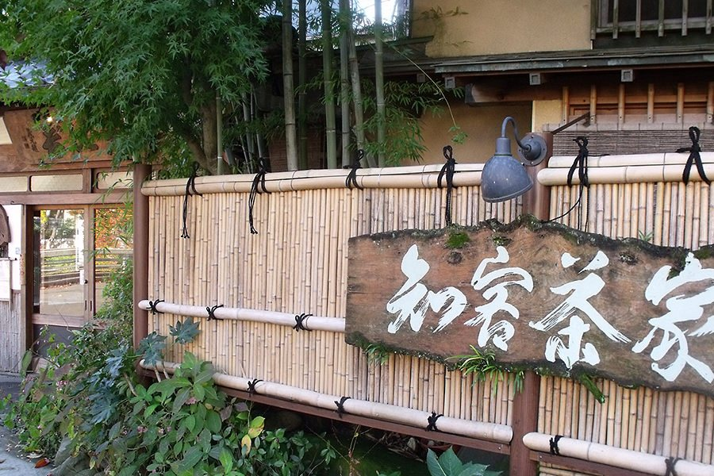

2026.09.22 TUE ／ RICK & LINDA ／ 箱根
箱根の昼、3軒
夕食は金乃竹に付いているので、空いているのは昼だけ。9/22は国民の休日で、ループを標準の順で回ると 14時ごろ元箱根 に着く。そこが昼の枠。
営業時間・予約要否は 2026-09-21 に各店の公式で確認した値。
⏰ 今日 16:00 で消える
富士屋ホテルのランチは
前日16時で予約を締め切る
16:00
土日祝のみの営業なので明日は営業日。ただし完全予約制で、締切は今日の16時。やるなら今。
行ける3軒
01メインダイニングルーム ザ・フジヤ宮ノ下 ／ 富士屋ホテル
昭和5年開業のダイニング。創業当時のレシピを継いだフレンチで、クレープシュゼットはワゴンで目の前で作る。隠れ家というより別世界の側。

- 営業
- 昼 12:00–15:00（L.O. 13:30）土日祝のみ。9/22は祝日なので営業日
- 予約
- 完全予約制・前日16時締切電話またはオンライン。受付 9:00–20:00
- 料金
- ランチコース ¥18,000 / 人2人で ¥36,000
- 服装
- スマートカジュアル男性は襟付きシャツ＋ジャケット。短パン・ダメージジーンズ不可。ジャケットが荷物にあるか要確認
- 動線
- ループの順番を変える必要あり朝いち彫刻の森 → 宮ノ下へ降りて12:00入店 → 午後に大涌谷〜芦ノ湖。L.O.13:30なので12:00入りが前提
0460-82-2211 に電話9:00–20:00
02山のホテル（ヴェル・ボワ／つつじの茶屋）元箱根 ／ 芦ノ湖畔
本館1Fがフランス料理「ヴェル・ボワ」、2Fが日本料理「つつじの茶屋」の懐石。窓の外が芦ノ湖。ループを組み替えずに一番素直に収まるのがここ。

- 営業
- 公式サイトに時間の記載なし電話で時間と空きを同時に確認する。ここだけ未確定
- 予約
- 電話で取れる0460-83-6321
- 動線
- ループのまま 14時ごろ元箱根着 に一致桃源台から海賊船で元箱根港 → 徒歩。箱根神社と同じエリア
- 注意
- 併設のロザージュはもう食事処ではない2026/4/16からテイクアウト中心の「フラワーカフェ」に変更。古い記事を見ると間違える
0460-83-6321 に電話時間と空きを一度に
03知客茶家箱根湯本 ／ 宿の1駅隣
箱根の湧き水で作った豆腐を昆布だしで温め、田舎味噌の山芋をのせた「早雲豆腐」が名物。古民家の造りで、値段は手頃。

- 営業
- 11:00–15:00（L.O. 14:15）火曜は15時で閉店／木曜定休・水曜夜休。9/22は昼のみ営業
- 予約
- 2階の座敷は前日までの電話予約1階は予約なしで入れる。予約席利用時のみサービス料10%
- 動線
- ループ後では間に合わないL.O.14:15。朝の出発前か、9/23の高山へ発つ前に寄る形なら成立
0460-85-5751 に電話2階を取るなら前日まで
調べて落とした3軒
| 店 | 落とした理由 |
|---|
| ラ・テラッツァ芦ノ湖 | 第2・第4火曜定休。9/22は第4火曜なので休み |
ザ・プリンス箱根芦ノ湖
ル・トリアノン／なだ万雅殿 | 公式に朝食とディナーしか載っていない＝ランチ営業なし |
| サロン・ド・テ ロザージュ | 2026/4/16からテイクアウト中心のカフェに変更デザートレストランではなくなった |
明日の流れと、昼が入る場所
- 9:30塔ノ沢 → 彫刻の森登山線で31〜39分。美術館は9:00–17:00、¥2,000（WEB¥1,800）
- 11:30強羅 → 早雲山ケーブルカー11分
- 12:00早雲山 → 大涌谷ロープウェイ約10分。黒たまご4個¥500（9:00–16:40）。案01を取るならここが宮ノ下のランチに置き換わる
- 13:00大涌谷 → 桃源台約20分、大涌谷で乗り換え
- 13:30桃源台 → 元箱根港海賊船25〜40分
- 14:00← 案02の昼はここ山のホテルは元箱根港から徒歩圏。箱根神社・平和の鳥居と同じエリア
- 16:00元箱根港 → 箱根湯本登山バスH路線・1番のりば。フリーパスに含まれる
ロープウェイは風速30m/s以上と悪天候で止まる。朝に箱根ナビの運行情報を見てから出発すること。箱根フリーパス2日間は小田原発・湯本発とも大人¥6,000で、上の乗り物は全部含まれる。